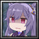
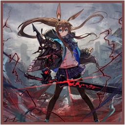

Player profile
starking01
Rank #29server.eurobattle.netSeason 2
Most played · Satsujinki
Matches5417 wins · 37 losses
Win rate31%
Avg K / D / A23.2 / 38.1 / 10.2
Avg APM141
Avg damage dealt181.5k
Avg damage taken145.3k
Heroes played
Explore heroes →| HERO | MATCHES | WIN RATE | AVG K / D / A | AVG DMG |
|---|---|---|---|---|
SatsujinkiMost played | 3 | 0% | 18.0 / 40.7 / 7.3 | 136.7k |
Kケイ・ダッシュ | 2 | 100% | 25.5 / 35.5 / 14.5 | 172.5k |
「聖剣王」 | 2 | 100% | 24.0 / 38.5 / 21.0 | 214.1k |
Ragna | 2 | 50% | 28.5 / 43.0 / 13.5 | 223.3k |
Shanks | 2 | 50% | 24.0 / 31.5 / 6.5 | 189.0k |
銀の圣者 | 2 | 50% | 25.0 / 39.5 / 12.0 | 202.5k |
鬼神遊戯 | 2 | 50% | 27.5 / 38.5 / 10.5 | 192.7k |
仮面ライダーゲンム | 2 | 0% | 22.5 / 42.5 / 7.5 | 198.9k |
Akaza | 2 | 0% | 24.0 / 49.5 / 14.0 | 199.3k |
Uchiha Itachi | 2 | 0% | 14.5 / 45.0 / 8.5 | 166.9k |
Gundam Exia Repair IV | 1 | 100% | 33.0 / 27.0 / 11.0 | 220.6k |
 Keqing | 1 | 100% | 26.0 / 42.0 / 15.0 | 260.6k |
White Princess of the True Ancestors | 1 | 100% | 32.0 / 31.0 / 15.0 | 211.8k |
Tokinada Tsunayashiro | 1 | 100% | 35.0 / 36.0 / 12.0 | 258.5k |
Majin Alter | 1 | 100% | 19.0 / 34.0 / 7.0 | 190.2k |
ディケイド | 1 | 100% | 17.0 / 19.0 / 6.0 | 112.0k |
モンキー・D・ルフィ | 1 | 100% | 24.0 / 46.0 / 24.0 | 245.8k |
ヤヒコ | 1 | 100% | 24.0 / 44.0 / 15.0 | 244.2k |
仮面ライダーエボルブラックホールフォーム | 1 | 100% | 40.0 / 33.0 / 10.0 | 206.3k |
孫 悟飯 | 1 | 0% | 24.0 / 31.0 / 2.0 | 157.0k |
『黑』 | 1 | 0% | 6.0 / 32.0 / 2.0 | 89.7k |
Ex-Soldier | 1 | 0% | 22.0 / 31.0 / 7.0 | 141.4k |
ポタラフュージョン 悟空＆ベジータ | 1 | 0% | 33.0 / 45.0 / 15.0 | 154.1k |
ナミカゼ ミナト | 1 | 0% | 8.0 / 24.0 / 6.0 | 84.4k |
《氷結の魔女》 | 1 | 0% | 12.0 / 41.0 / 16.0 | 124.2k |
 Amiya | 1 | 0% | 23.0 / 26.0 / 6.0 | 165.3k |
Dante スパーダの息子 | 1 | 0% | 23.0 / 42.0 / 9.0 | 190.1k |
Zero | 1 | 0% | 40.0 / 32.0 / 7.0 | 245.5k |
『星の理』 | 1 | 0% | 18.0 / 43.0 / 8.0 | 151.4k |
ゴクウブラック | 1 | 0% | 25.0 / 48.0 / 7.0 | 180.0k |
ジョルノ | 1 | 0% | 29.0 / 30.0 / 7.0 | 155.9k |
黒崎 一護 | 1 | 0% | 15.0 / 34.0 / 10.0 | 140.3k |
『斬撃の花』 | 1 | 0% | 28.0 / 32.0 / 9.0 | 150.7k |
カルナ | 1 | 0% | 22.0 / 46.0 / 16.0 | 238.6k |
Kiana Kaslana | 1 | 0% | 26.0 / 34.0 / 8.0 | 158.7k |
Hitsugaya Toshiro | 1 | 0% | 19.0 / 38.0 / 10.0 | 221.3k |
仮面ライダータイクーン | 1 | 0% | 23.0 / 39.0 / 11.0 | 167.1k |
Itsuka Kotori | 1 | 0% | 24.0 / 51.0 / 7.0 | 210.9k |
KenshinEx | 1 | 0% | 18.0 / 38.0 / 10.0 | 147.6k |
千子村正 | 1 | 0% | 15.0 / 40.0 / 3.0 | 140.8k |
Lelouch Vi Britannia | 1 | 0% | 24.0 / 41.0 / 5.0 | 173.4k |
『Codename 555-SB』 | 1 | 0% | 10.0 / 40.0 / 5.0 | 112.4k |
ミサカ ミコト | 1 | 0% | 30.0 / 39.0 / 12.0 | 220.1k |
Averages use recorded statistics only; unavailable historical values are shown as —.
Recent matches
Open a match for its scoreboard and kill matchups.
LOSS68:50
MCB #1000083
26 Nov 2026 · 20:38 WIB
24.0 / 45.0 / 8.0View match →
WIN39:02
MCB #2000270
25 Nov 2026 · 22:12 WIB
36.0 / 41.0 / 17.0View match →
LOSS78:51
MCB #2000269
25 Nov 2026 · 21:21 WIB
16.0 / 31.0 / 4.0View match →
WIN55:14
MCB #1000082
25 Nov 2026 · 19:33 WIB
33.0 / 27.0 / 11.0View match →
LOSS49:09
MCB #2000268
25 Nov 2026 · 02:11 WIB
24.0 / 31.0 / 2.0View match →
LOSS48:05
MCB #2000267
25 Nov 2026 · 00:02 WIB
6.0 / 32.0 / 2.0View match →
LOSS55:14
MCB #2000266
24 Nov 2026 · 23:08 WIB
22.0 / 31.0 / 7.0View match →
LOSS61:26
MCB #2000264
24 Nov 2026 · 04:17 WIB
31.0 / 51.0 / 18.0View match →
LOSS53:59
MCB #2000263
24 Nov 2026 · 02:47 WIB
33.0 / 45.0 / 15.0View match →
WIN56:06
MCB #2000261
24 Nov 2026 · 00:12 WIB
28.0 / 35.0 / 16.0View match →